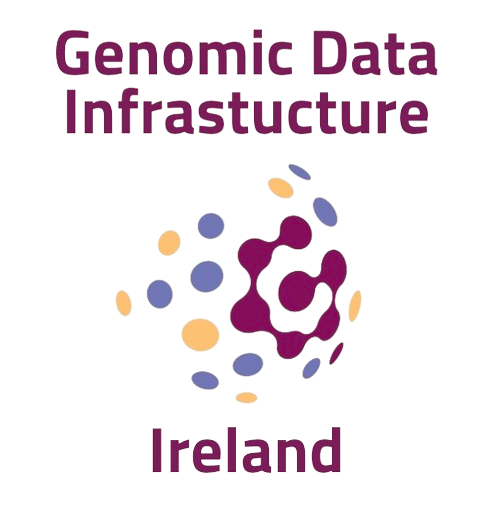

Genomic Data Infrastructure (GDI) Ireland is the Irish arm of a collaborative European research project that aims to allow safe and secure access to genetic data. It is a cross-institutional project.

Why is this project important?
It has been widely recognised that a safe and secure infrastructure for genetic data is needed in Ireland to enable scientific research.
A recommendation listed in this report was to "design a secure
infrastructure to host genomic data so that data-sharing between health
care professionals and health researchers is encouraged and facilitated, technically and to agreed standards."
In 2023, a Deliberative Dialogue on Genomics carried out by individuals representing patients, advocates of people affected by neurological disease, clinicians, and researchers in Neurological Healthcare & Research recommended the creation of a "secure central genomics database that enables impactful research".
GDI Ireland will create a proof of concept infrastructure to address these recommendations and aims using synthetic genetic data first.
This will be done as part of the wider European
Genomic Data Infrastructure project.
Vision
Enabling precision medicine and improved treatments for cancer, rare and other diseases via safe and secure sharing and analysis of our DNA.
Mission
To create a safe and secure infrastructure for genetic data in Ireland guided by European best practice.